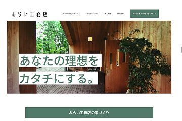
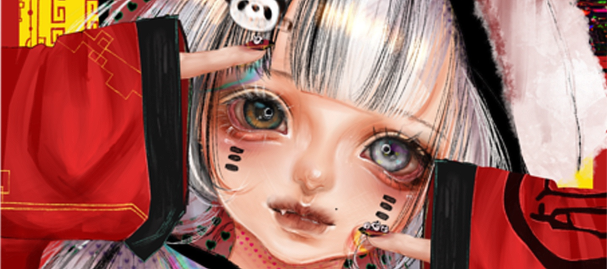
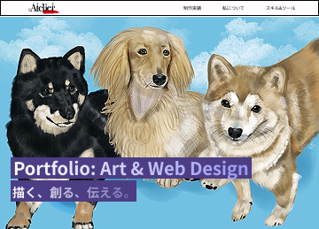
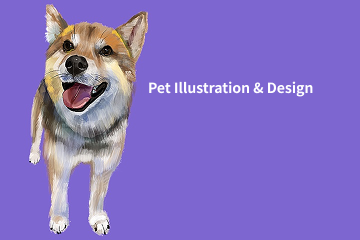
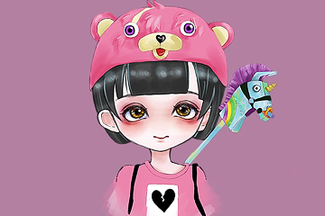
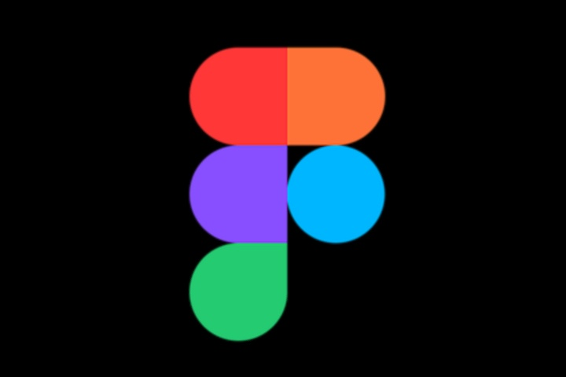
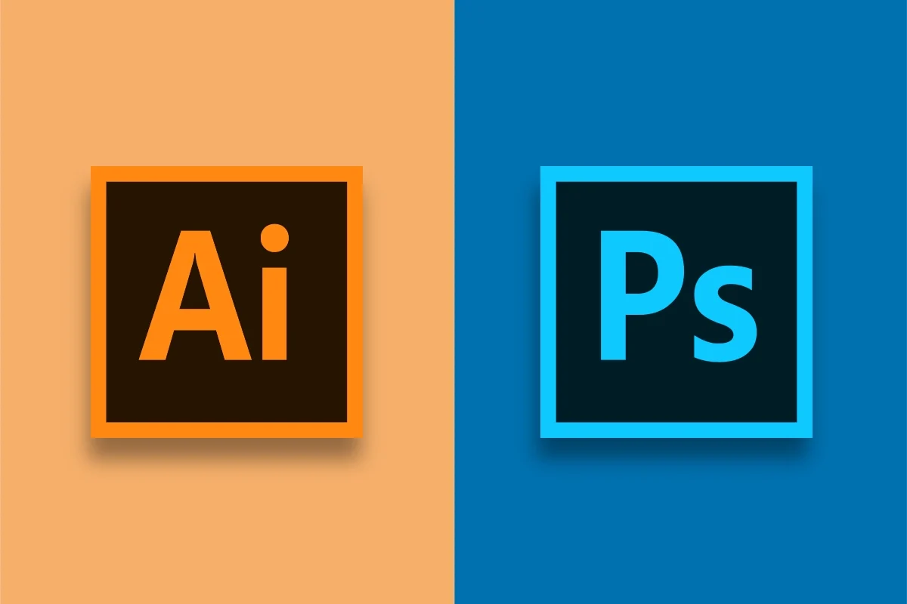
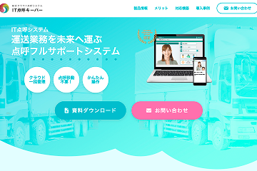
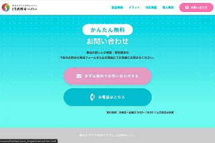

Webサイト
みらい工務店 - 理想の暮らしをカタチにする家づくり -
木の温もりや自然との調和を感じさせる、洗練された工務店のWebサイトデザインです。ユーザーが求める情報へスムーズにアクセスできるよう、すっきりとしたナビゲーションと落ち着いた配色で、安心感と信頼感を与えるレイアウトに仕上げています。
サイトを見る >
コードと色彩で、異世界を構築する
デザインとアートの境界線。

Webサイト
木の温もりや自然との調和を感じさせる、洗練された工務店のWebサイトデザインです。ユーザーが求める情報へスムーズにアクセスできるよう、すっきりとしたナビゲーションと落ち着いた配色で、安心感と信頼感を与えるレイアウトに仕上げています。
サイトを見る >バナー
デジタルイラストレーションとWebデザインの境界線を探求するポートフォリオの全作品アーカイブ。繊細なディテールと毒気のある色彩が織りなす、私だけの世界観を網羅しています。最新のアートワークから、Webサイト制作の実績まで、私のクリエイティブのすべてをここに集約しました。

Webサイト
愛犬たちの個性を描き出した動物のポートフォリオ制作。それぞれの毛並みの質感や、表情の繊細な違いをデジタルイラストで表現しました。背景を明るい色調にすることで、被写体との対比による『温かさ』と『日常の親しみやすさ』を強調し、ペットの愛らしさが引き立つWebサイトのメインビジュアルとして構成しています。

バナー
デジタル技術でペットの個性を鮮やかに描き出すポートフォリオ制作。鮮やかなカラー背景と緻密なタッチを組み合わせることで、空間を明るく彩るアートを提案しています。大切な家族の姿をWebデザインと融合させるクリエイティブの可能性を追求しました。

Anzu Nagashima
1994年12月9日生まれ。高校卒業後、実務に従事しながらESA-AcademyにてWebデザインを専門的に学ぶ。
独学とスクールでの学習を通じ、HTML/CSSを用いたWebサイト制作の基礎を習得。現在は、自身が得意とするイラストレーションの色彩感覚を活かし、美しさと機能美が調和したWebデザインの実現を目指し学習を続けています。
Webサイト制作・デザイン・イラスト制作を軸に活動。単に見た目が美しいだけでなく、ユーザーにとって「分かりやすく、使いやすい」体験を設計し、目的達成に繋がるデザインと機能を提供します。

Figmaを使用して、Webサイトやバナーのレイアウトデザインを制作しています。自身でHTML/CSS（SCSS）の実装を行う視点を活かし、コーディング時の再現性やモバイルレスポンシブを意識したコンポーネント設計を心がけています。デザインの美しさだけでなく、レイヤー構造の整理や、ガイドに沿った正確なデータ作成が可能です。

得意とするデジタルイラストレーションの制作や、バナー等のビジュアル制作に使用しています。Photoshopを用いた緻密な手描きタッチの表現や画像加工、Illustratorを使ったグラフィック作成に対応可能です。ダークで美しい世界観のアートワークから、温かみのあるアニマルポートレートまで、媒体の目的に合わせた幅広いテイストを描き分けることができます。

Webサイトの骨組みからスタイリングまでを一貫して担当しています。スマートフォン・タブレット・PCなど、あらゆるデバイスで最適に表示されるレスポンシブデザインを実装可能です。また、クラス設計においてはBEMなどの命名規則を意識し、将来的な改修や他のデザイナー・開発者が見ても理解しやすい、クリーンで保守性の高いコードを書くことを心がけています。

ユーザーの操作に反応するインタラクティブな演出を実装しています。スクロールに応じて要素をふわっと表示させるアニメーションや、画像のホバーエフェクト、直感的に操作できるアコーディオングループなど、Webサイトの質を高めるUI表現を制作しています。単に動きをつけるだけでなく、読み込み速度やユーザビリティにも配慮した実装を意識しています。
業務でのコミュニケーションツールとして活用しているだけでなく、Canvasを使用して案件情報の整理・共有も行っています。チャンネルを活用した情報管理や、リマインダー・ワークフロー機能を取り入れることで、業務の効率化にも役立てています。
Visual Studio Codeを使用して、効率的なコーディング環境を整えています。拡張機能やスニペットを活用し、作業のスピードと品質の両立を意識しています。

プロジェクトの進捗管理や情報整理、ドキュメント作成に活用しています。タスクの優先順位やスケジュールをデータベース化して一元管理し、スムーズで計画的な制作進行を意識するための必須ツールとして取り入れています。

アイデア出しや文章構成のブラッシュアップ、コーディング時のリサーチなど、制作プロセスの効率化を図るためのAIパートナーとして活用しています。作業の壁打ちや効率的な情報整理を行うことで、クリエイティブの質とスピードを高めるために取り入れています。